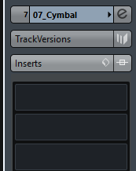
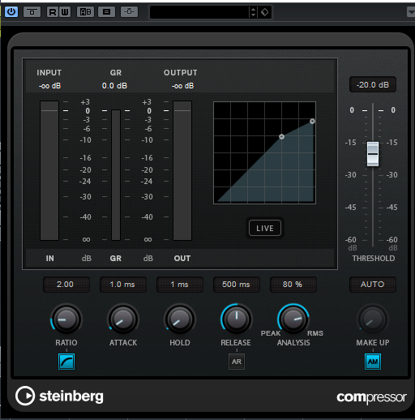

Cubase has a built in compressor to get you started with your dynamic processing.

We can access this by adding the Compressor plugin from the Dynamics insert menu to a blank insert slot on a channel.

In Cubase 9 the Compressor has had a design overhaul however many of the features and setting are exactly the same in previous versions.
We can control the Ratio, Attack, Hold and Release with a series of dials at the bottom of the window. The Threshold control on the side can be used to choose the point where the compressor will start compressing. The Gain Reduction meter can be used to see how many decibels the signal will be Attenuated.
See the Compressor section for more information on how to use this.